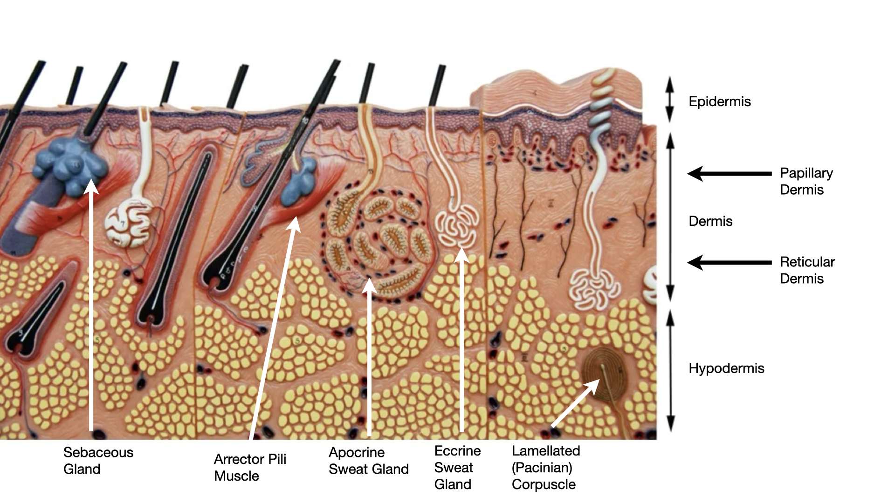
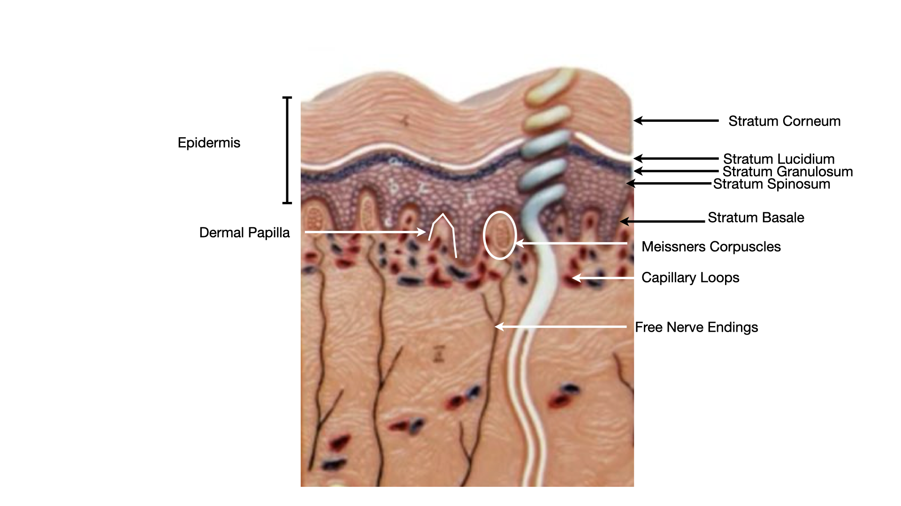
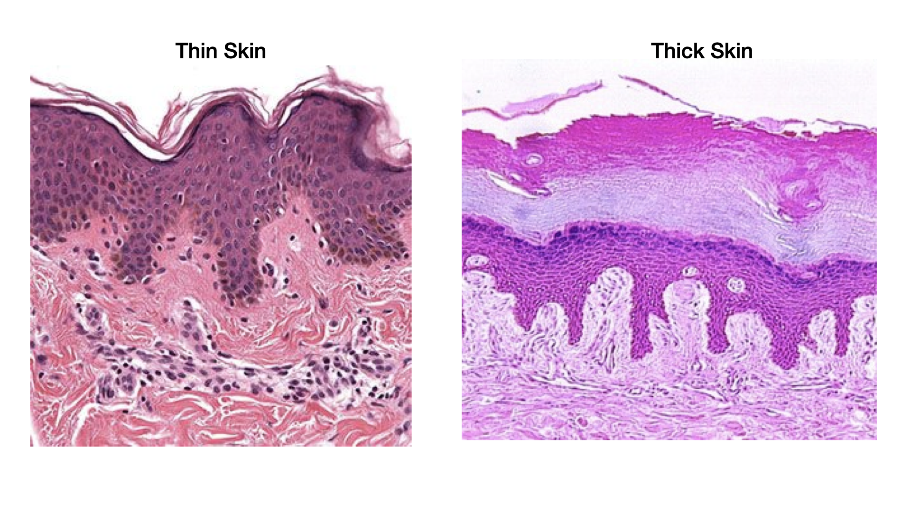
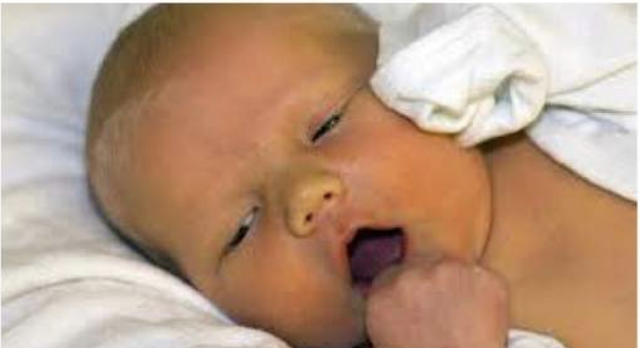
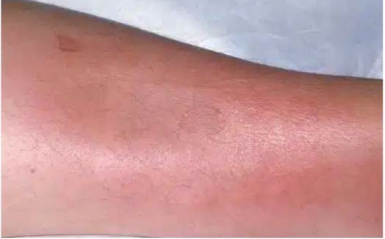
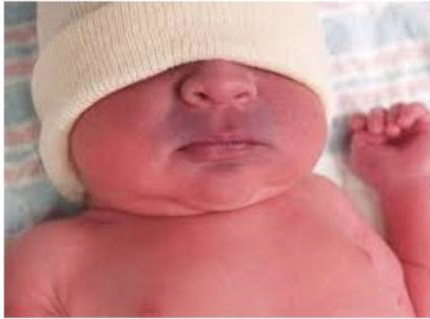
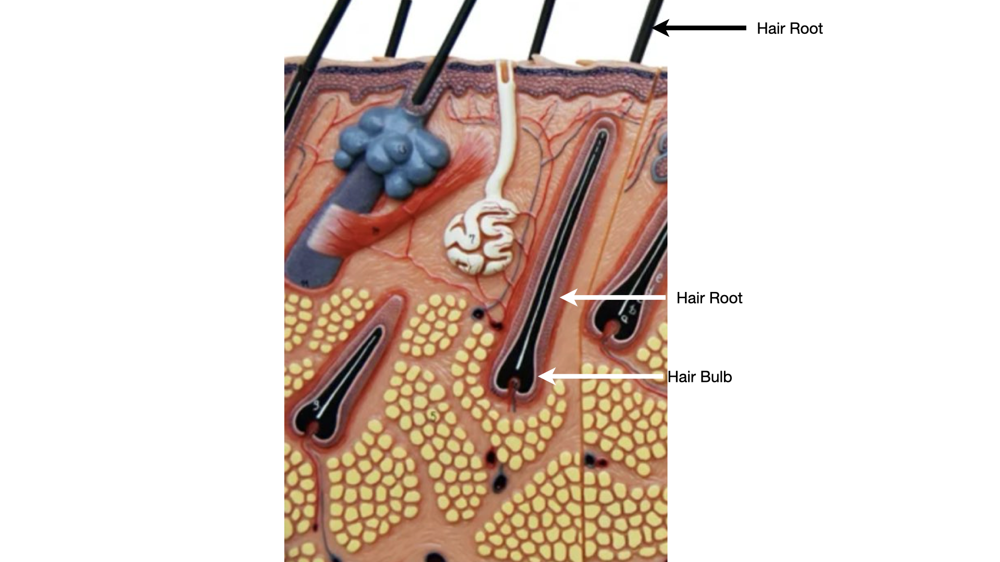
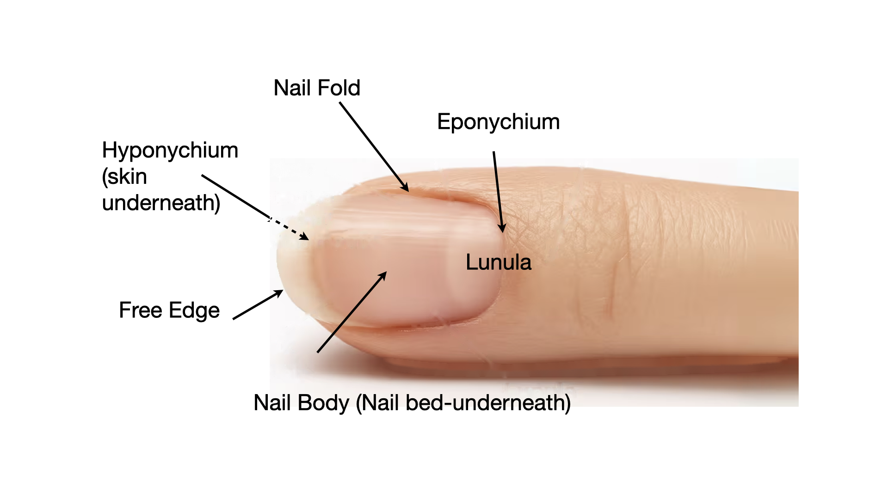

Lecture video
The Integumentary System: full lecture
Open these in a new tab to follow along while the video plays. Tip: download to your tablet and write notes.
Focus: Human Anatomy
The Integumentary System
Skin is the body's largest organ. It is built from all four tissue types working together, layered into the epidermis and dermis, with appendages (hair, nails, glands) growing down from the surface. In a combined class this anatomy unit pairs with the skin physiology unit. Dr. Sharilyn Rennie
Download the PowerPoint · need a PDF? Use Print / Save PDF, or download the accessible PDF from Canvas.
Part 1
The Skin and Its Layers
Skin is an organ made of two attached layers, the epidermis and the dermis, resting on the hypodermis. Learn the plan, then the parts.
Part 1 · The big picture
The integument: the body's largest organ
The cutaneous membrane (skin) is the epidermis (a surface epithelium) firmly attached to the dermis (a connective tissue layer) beneath it. The hypodermis is a fatty layer below that anchors skin to the body.
- Protection: a physical, chemical, and biological barrier against abrasion, water loss, UV, and microbes.
- Temperature regulation: blood flow and sweat glands shed or hold heat.
- Sensation: receptors for touch, pressure, temperature, and pain.
- Metabolic: begins vitamin D production when sunlight strikes the skin.
- Excretion and storage: small amounts of waste leave in sweat; the dermis stores water and fat sits in the hypodermis.
Part 1 · The layered model
Two layers, plus the hypodermis
- Epidermis: keratinized stratified squamous epithelium. No blood vessels of its own.
- Dermis: connective tissue in two zones, the thin papillary layer and the thick reticular layer. Holds vessels, nerves, and glands.
- Hypodermis (subcutaneous): areolar and adipose tissue. Not part of the skin itself, but anchors it and cushions.
- Embedded structures: sebaceous gland, arrector pili muscle, apocrine and eccrine sweat glands, and the lamellated (Pacinian) corpuscle.

The full-thickness skin model: layers and embedded structures.
Skin model photographed and labeled by Dr. Sharilyn Rennie.
Part 2
The Epidermis
A tough, renewing sheet of keratinized stratified squamous epithelium. Cells are born deep and die at the surface.
Part 2 · The strata
The epidermis: layers from deep to superficial
Keratinocytes are pushed up from the base, fill with keratin, and die. Read the strata from deep to superficial:
- Stratum basale: single row of dividing stem cells on the basement membrane. Melanocytes and tactile cells sit here.
- Stratum spinosum: several rows of keratinocytes linked by desmosomes (a spiny look).
- Stratum granulosum: cells fill with granules and begin to die.
- Stratum lucidum: a clear band found only in thick skin (palms, soles).
- Stratum corneum: many flat, dead, keratin-filled cells. The barrier you see and touch.
Deep to superficial memory line: Basale, Spinosum, Granulosum, Lucidum, Corneum.

The five epidermal strata, with dermal papillae beneath.
Skin model photographed and labeled by Dr. Sharilyn Rennie.
Part 2 · Thick and thin
Thick skin and thin skin
- Thin skin covers most of the body. It has four strata (no stratum lucidum) and a thinner corneum, with hair follicles.
- Thick skin covers the palms and soles. It adds the stratum lucidum, has a very thick corneum, and has no hair follicles.
- Spot it: on a slide, thick skin shows a tall pink corneum and deep epidermal ridges; thin skin shows a slim corneum and shallower ridges.

Thin skin (left) and thick skin (right).
Light micrographs of thin and thick skin, used for teaching.
Part 3
Epidermal Cells and Skin Color
Most epidermal cells are keratinocytes, but three other cell types live among them, and three pigments set skin color.
Part 3 · Four cell types
The four cells of the epidermis
Keratinocytes
- Where: every stratum; they are the bulk of the epidermis.
- Job: make keratin for the barrier and produce water-resistant cells.
- Spot it: linked by desmosomes; flatten and die as they rise.
Melanocytes
- Where: stratum basale.
- Job: make melanin and hand it to keratinocytes to shield DNA from UV.
- Spot it: spidery cells with long processes in the deepest layer.
Tactile (Merkel) cells
- Where: stratum basale, paired with a nerve ending.
- Job: sense light touch.
- Spot it: sit at the dermal border with a sensory disc.
Dendritic (Langerhans) cells
- Where: mainly stratum spinosum.
- Job: immune cells that patrol for invaders.
- Spot it: star-shaped, mobile, arise from bone marrow.
Part 3 · Four cell types
The four cells of the epidermis, mapped
Read it top down: the four cells, then each cell's where, job, and what it looks like.
- Top-down mind map. Level one: the four cells of the epidermis. Level two: the four cell types. Level three under each type: where it sits, its job, and what it looks like.
- Keratinocytes. Where: every stratum; they are the bulk of the epidermis. Job: make keratin for the barrier and produce water-resistant cells. Looks like: linked by desmosomes; they flatten and die as they rise.
- Melanocytes. Where: stratum basale. Job: make melanin and hand it to keratinocytes to shield DNA from UV. Looks like: spidery cells with long processes in the deepest layer.
- Tactile (Merkel). Where: stratum basale, paired with a nerve ending. Job: sense light touch. Looks like: sits at the dermal border with a sensory disc.
- Dendritic (Langerhans). Where: mainly stratum spinosum. Job: immune cells that patrol for invaders. Looks like: star-shaped, mobile, and arise from bone marrow.
Part 3 · Pigment
What gives skin its color
Three pigments combine to set skin tone:
- Melanin: made by melanocytes; ranges from brown-black to red-yellow. The main source of differences in skin color and a UV shield.
- Carotene: a yellow-orange pigment from the diet, most visible in the stratum corneum of the palms and soles.
- Hemoglobin: the red of oxygenated blood in dermal vessels, seen through lighter epidermis as pink.
Part 3 · Clinical color
Reading skin color: four clinical signs
A change in skin color is a clinical clue. Each of these four points to a different cause.
Jaundice
Liver / pancreatic problems; newborns.

Pallor
Anemia.
Erythema
Fever, infection or inflammation, carbon monoxide poisoning, sunburn.

Cyanosis
Hypoxia.

Part 4
The Dermis and Hypodermis
Below the epidermis sits the strong, living core of the skin, then the fatty layer that anchors it.
Part 4 · The dermis
The dermis: papillary and reticular layers
Papillary layer (superficial, thin)
- Where: just under the epidermis; throws up dermal papillae.
- Job: feeds the epidermis and grips it with interlocking ridges (these form fingerprints).
- Spot it: loose areolar tissue with capillary loops, free nerve endings, and tactile (Meissner) corpuscles.
Reticular layer (deep, thick)
- Where: the bulk of the dermis.
- Job: gives skin its strength, stretch, and recoil.
- Spot it: dense irregular tissue; collagen and elastic fibers in all directions, with lamellated (Pacinian) corpuscles for deep pressure.
Collagen bundles run in parallel lines of tension called cleavage (Langer) lines, which guide how incisions heal.
Find the papillary and reticular dermis between the epidermis and the hypodermis.
Skin model photographed and labeled by Dr. Sharilyn Rennie.
Part 4 · The hypodermis
The hypodermis (subcutaneous layer)
- Where: deep to the dermis; not part of the skin proper.
- Job: anchors skin to underlying muscle and bone while letting it slide, insulates, and absorbs shock.
- Spot it: areolar and adipose tissue; thickens where the body stores fat.
- Because it is well supplied with blood and fat, it is a common site for injections that absorb slowly (subcutaneous route).
The hypodermis is the deep fatty layer below the reticular dermis.
Skin model photographed and labeled by Dr. Sharilyn Rennie.
Part 5
Hair and Nails
Appendages of the skin are made of hard keratin and grow from epidermis that dips deep into the dermis.
Part 5 · Hair
Hair and the hair follicle
- Shaft is the part above the skin; the root is the part in the follicle.
- Follicle: an epidermal tube that dips into the dermis and ends in a widened bulb.
- Matrix at the bulb is the growth zone; the hair papilla feeds it with a capillary.
- Arrector pili: a smooth muscle that pulls the hair upright (goosebumps) and squeezes the sebaceous gland.
- Job: warmth, light-touch sensing, and protection (scalp from UV, nose and ears from particles).

Hair roots and bulbs set in the dermis and hypodermis.
Skin model photographed and labeled by Dr. Sharilyn Rennie.
Part 5 · Nails
Nails
A nail is a plate of hard keratin over the tips of fingers and toes.
- Nail plate (nail body) is the visible nail; its free edge grows past the fingertip.
- Nail bed is the epidermis under the plate; the nail matrix at the root is the growth zone.
- Lunula is the pale crescent over the thick matrix; the eponychium (cuticle) seals the proximal edge and the nail folds border the sides.
- The hyponychium is the skin beneath the free edge. Job: protect the fingertip; nail color can hint at oxygen levels.

Surface anatomy of the nail.
Labeled by Dr. Sharilyn Rennie.
Part 6
Glands of the Skin
Two main gland families open onto the skin: oil glands and sweat glands, plus a few modified versions.
Part 6 · Skin glands
Sebaceous and sweat glands
Sebaceous (oil) glands
- Where: almost everywhere except palms and soles; usually empty into a hair follicle.
- Job: secrete sebum (oil) that softens skin and hair and slows bacteria.
- Spot it: holocrine glands; whole cells burst to release the product.
Eccrine (merocrine) sweat glands
- Where: over the whole body, dense on palms, soles, and forehead; open onto the surface.
- Job: make watery sweat for cooling (thermoregulation).
- Spot it: coiled tubes in the dermis; the most common sweat gland.
Apocrine sweat glands
- Where: axillary and genital regions; open into hair follicles.
- Job: release a richer sweat that body bacteria turn into body odor; active from puberty.
- Spot it: larger glands deep in the dermis. Modified versions: ceruminous (earwax) and mammary (milk).
Glands and associated structures in the full-thickness skin model.
Skin model photographed and labeled by Dr. Sharilyn Rennie.
Part 6 · Synthesis
Form follows function in the skin
- A dead, keratinized corneum makes the barrier work; living layers below replace it for life.
- Melanin sits over basal nuclei exactly where UV would do the most genetic damage.
- Dense irregular dermis takes pulling forces from every direction, so skin resists tearing.
- Appendages are epidermis that grew downward, so hair, nails, and glands are all keratin or epithelial tubes.
- Vessels and sweat glands sit in the dermis because temperature control needs blood and water at depth.
Part 7
Check Your Understanding
Three questions from recall to reasoning, a lab identification, and the key takeaways.
Part 7 · Recall (DOK 1)
Name the layer
Depth of Knowledge 1 · Recall
Which epidermal stratum is the deepest and contains the dividing stem cells?
Answer
Stratum basale. It sits on the basement membrane and is where keratinocytes divide and melanocytes live.
Part 7 · Skill / concept (DOK 2)
Match structure to type
Depth of Knowledge 2 · Skill / concept
The reticular layer of the dermis resists pulling forces from all directions. Which tissue gives it that property?
Answer
Dense irregular connective tissue. Its collagen bundles run in every direction, so the skin resists tension from any angle.
Part 7 · Strategic reasoning (DOK 3)
Reason it through
Depth of Knowledge 3 · Strategic reasoning
A surgeon plans an incision on the forearm to heal with the least scarring. Why follow cleavage (Langer) lines?
Answer
They parallel the dermal collagen. Cutting along the lines parts the bundles rather than cutting across them, so the wound gaps less and scars less.
Part 7 · Lab check
Identify it
Cover the labels and name every structure before lab. State its layer and one function for each.
Name the layers, the glands, the muscle, and the deep corpuscle.
Skin model photographed and labeled by Dr. Sharilyn Rennie.
Name each epidermal stratum and the dermal structures below.
Skin model photographed and labeled by Dr. Sharilyn Rennie.
Wrap-up
Key takeaways
- Skin is two attached layers: epidermis (keratinized stratified squamous epithelium) over dermis (connective tissue), with a fatty hypodermis beneath.
- Epidermal strata, deep to superficial: basale, spinosum, granulosum, lucidum (thick skin only), corneum.
- Four epidermal cells: keratinocytes, melanocytes, tactile (Merkel), dendritic (Langerhans).
- Dermis = thin papillary (areolar, sensation) over thick reticular (dense irregular, strength).
- Skin color = melanin + carotene + hemoglobin.
- Appendages: hair and nails (hard keratin), sebaceous (holocrine oil), and sweat glands (eccrine cooling, apocrine scent).
Lecture slides
Show the slides for this topic ▸
Open a deck in its own tab so you can scroll it beside the video. Your printed master copy has the same content.